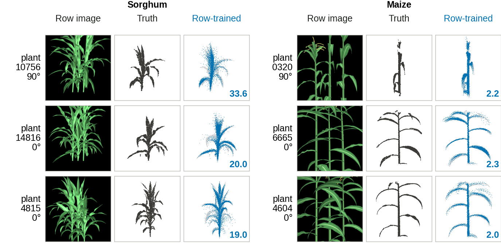
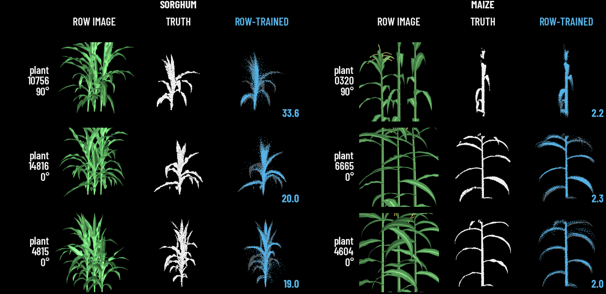
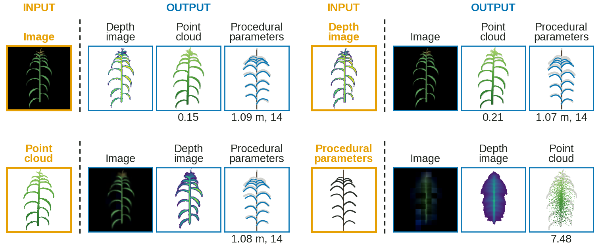
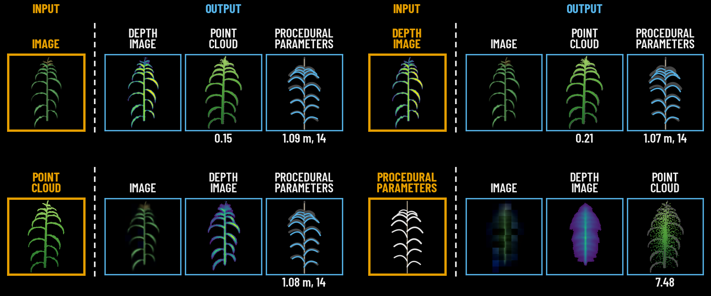
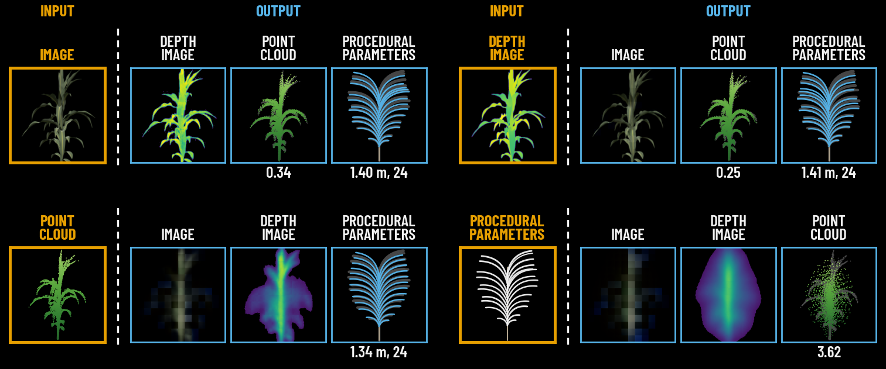

<title>Figure Style Comparison</title>
<meta name="claude:viewport-fit-sides" content="cover">
<link rel="stylesheet" href="https://fonts.googleapis.com/css2?family=Barlow+Condensed:wght@700;800&family=Barlow:wght@400;500;600&display=swap">
<style>
  /* Layout: one column per figure; a toggle switches every figure between the paper version and the athletic version,
     with a side-by-side mode on wide screens. Single dark look, matching the athletic style under review. */
  :root {
    --bg: #0b0b0b; --fg: #f2f2f2; --muted: #a3a3a3; --rule: #2a2a2a; --card: #161616; --paper: #ffffff; --accent: #56b4e9;
    --display: "Barlow Condensed", "Arial Narrow", Impact, sans-serif;
    --body: "Barlow", system-ui, -apple-system, "Segoe UI", sans-serif;
    color-scheme: dark;
  }
  * { box-sizing: border-box; }
  body { margin: 0; background: var(--bg); color: var(--fg); font-family: var(--body); font-size: 16px; line-height: 1.55;
         padding-left: max(16px, env(safe-area-inset-left, 0px)); padding-right: max(16px, env(safe-area-inset-right, 0px)); }
  main { max-width: 1400px; margin: 0 auto; padding-block: 48px 80px; display: grid; gap: 56px; }
  h1, h2 { font-family: var(--display); font-weight: 800; text-transform: uppercase; margin: 0; line-height: .95; text-wrap: balance; }
  h1 { font-size: clamp(40px, 6.5vw, 76px); }
  h2 { font-size: clamp(26px, 3.4vw, 38px); }
  p { margin: 0; max-width: 72ch; }
  .muted { color: var(--muted); }
  .kicker { font-family: var(--display); font-weight: 700; letter-spacing: .14em; text-transform: uppercase; color: var(--muted); font-size: 15px; }
  header { display: grid; gap: 14px; }
  .bar { display: flex; flex-wrap: wrap; gap: 12px 24px; align-items: center; position: sticky; top: env(safe-area-inset-top, 0px); z-index: 5;
         background: var(--bg); padding-block: 12px; border-bottom: 1px solid var(--rule); }
  body::before { content: ""; position: fixed; inset: 0 0 auto; height: env(safe-area-inset-top, 0px); z-index: 10; background: var(--bg); }
  .seg { display: inline-flex; border: 2px solid var(--fg); }
  .seg button { font-family: var(--display); font-weight: 700; font-size: 15px; letter-spacing: .08em; text-transform: uppercase; border: 0;
                background: transparent; color: var(--fg); padding: 7px 14px; cursor: pointer; }
  .seg button + button { border-left: 2px solid var(--fg); }
  .seg button[aria-pressed="true"] { background: var(--fg); color: var(--bg); }
  .seg button:focus-visible { outline: 2px solid var(--accent); outline-offset: 2px; }
  section { display: grid; gap: 14px; }
  .pair { display: grid; gap: 14px; grid-template-columns: minmax(0, 1fr); }
  body[data-mode="both"] .pair { grid-template-columns: minmax(0, 1fr) minmax(0, 1fr); }
  @media (max-width: 900px) { body[data-mode="both"] .pair { grid-template-columns: minmax(0, 1fr); } }
  figure { margin: 0; display: grid; gap: 8px; min-width: 0; }
  figure img { display: block; width: 100%; max-width: 100%; height: auto; }
  figure.paper img { background: var(--paper); padding: 10px; }
  figcaption { font-family: var(--display); font-weight: 700; letter-spacing: .1em; text-transform: uppercase; font-size: 14px; color: var(--muted); }
  body[data-mode="paper"] figure.athletic, body[data-mode="athletic"] figure.paper { display: none; }
  .notes { display: grid; gap: 10px; background: var(--card); padding: 18px 20px; }
  .notes ul { margin: 0; padding-left: 20px; display: grid; gap: 6px; max-width: 80ch; }
</style>

<main>
  <header>
    <div class="kicker">CropCode · paper figures</div>
    <h1>Paper style vs athletic style</h1>
    <p class="muted">The same figures with the same data, plants and layout, drawn two ways. Only colours, fonts and letter case change. The paper still uses the white versions; nothing has been swapped in.</p>
  </header>

  <div class="bar" role="group" aria-label="Which version to show">
    <div class="seg" id="mode">
      <button type="button" data-v="both" aria-pressed="true">Side by side</button>
      <button type="button" data-v="paper" aria-pressed="false">Paper only</button>
      <button type="button" data-v="athletic" aria-pressed="false">Athletic only</button>
    </div>
  </div>

  <section aria-labelledby="h-rows">
    <h2 id="h-rows">Fig. 9 · Crop rows</h2>
    <p class="muted">Three held-out plants per species: the row image, the true center plant, and the row-trained model's reconstruction with its Chamfer distance (×10⁻⁴ m²).</p>
    <div class="pair">
      <figure class="paper"><figcaption>Paper (current)</figcaption></figure>
      <figure class="athletic"><figcaption>Athletic</figcaption></figure>
    </div>
  </section>

  <section aria-labelledby="h-maize">
    <h2 id="h-maize">Fig. 11 · Any input to all, maize</h2>
    <p class="muted">Plant 1875, view 09. Each block: one input stream on the left, the three streams the distilled model generates from it on the right.</p>
    <div class="pair">
      <figure class="paper"><figcaption>Paper (current)</figcaption></figure>
      <figure class="athletic"><figcaption>Athletic</figcaption></figure>
    </div>
  </section>

  <section aria-labelledby="h-sorghum">
    <h2 id="h-sorghum">Fig. 12 · Any input to all, sorghum</h2>
    <p class="muted">Plant 7712, view 05, the same layout as Fig. 11.</p>
    <div class="pair">
      <figure class="paper"><figcaption>Paper (current)</figcaption></figure>
      <figure class="athletic"><figcaption>Athletic</figcaption></figure>
    </div>
  </section>

  <section class="notes" aria-labelledby="h-notes">
    <h2 id="h-notes">Before choosing</h2>
    <ul>
      <li>Both versions keep 9 pt text and colour-blind-safe colours (Okabe-Ito blue and orange, viridis depth).</li>
      <li>Full-page black figures use a lot of toner in print, and CVPR papers almost always use white figures. A black figure also clashes with the white TikZ Figure 2.</li>
      <li>On the project page and in slides, the black versions match the site's new look.</li>
      <li>Any figure can be produced in either style from the same data with <code>figures/make_athletic_figs.py</code>.</li>
    </ul>
  </section>
</main>

<script>
  (function () {
    const seg = document.getElementById('mode');
    function set(v) {
      document.body.dataset.mode = v;
      seg.querySelectorAll('button').forEach(b => b.setAttribute('aria-pressed', String(b.dataset.v === v)));
    }
    seg.addEventListener('click', e => { const b = e.target.closest('button'); if (b) set(b.dataset.v); });
    set('both');
  })();
</script>
